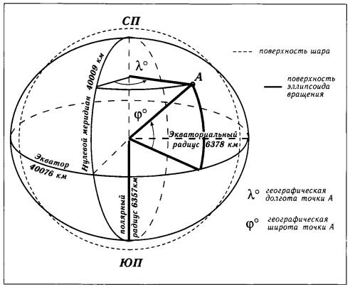

Основные понятия
Форма Земли подобна сфере (эллипсоид). Она вращается вокруг собственной оси, концы которой - Северный и Южный полюса.

Широта и долгота измеряются в градусах:
- градусом географической широты является 1/180 часть меридиана
- градусом географической долготы является 1/360 часть экватора
Каждый градус разделён на 60 частей, названные минутами и каждая минута разделена на 60 частей, названные секундами.
Сколько километров в градусе, минуте и секунде?
Широта. Тут все просто: длина окружности (меридиана) постоянна - 40 008,55 км, разделим на 360°, получим:
111,134861111 км в одном градусе, делим на 60 минут:
1,85224768519 км в одной минуте, делим на 60 секунд:
0,0308707947531 км (30,8707947531 м) в одной секунде.
Долгота. Длина окружности различна - 40.075,696 км на экваторе, 0 на полюсах. Расчитывается как длина одного градуса на экваторе умноженного на косинус угла широты. Один градус на экваторе - 40 075,696 км / 360° = 111,321377778 км/° (111321,377778 м/°)
На примере Казани:
Широта 55,79083°, cos(55,79083) = 0,639952169604 * 111321,377778 м/° = 71 240,3572324 м/°
71,2403572324 км в одном градусе, делим на 60 минут:
1,18733928721 км в одной минуте, делим на 60 секунд:
0,0197889881201 км (19,7889881201 м) в одной секунде.
GPS приемник
Современные "бытовые" GPS приемники, даже в солнечную погоду (чистое небо) и на открытом пространстве, позволяют определить координаты с погрешностью ±3 метра. Именно это определяет формат и точность записи координат, принятых на сайте.
Принято соглашение, и это отражено в заполняемых документах, что GPS приемник настроен для работы в системе WGS84.
Хочется отметить, что координаты точек в GPS приемнике хранятся в своем, внутреннем формате. В настройках устройства можно установить формат, в котором эти координаты отображаются на экране - так как Вам удобнее. Сами данные при этом никак не меняются.
Форматы записи координат
Чаще всего используются три формата записи координат.
1. Градусы минуты секунды, например 55° 47′ 27″, где:
2. Градусы минуты, например 55° 47.450′, где:
3. Градусы, например 55.79083°
Положительность или отрицательность координат обозначают двуми способами:
положительные значения: «N» северная широта, «E» восточная долгота
отрицательные значения: «S» южная широта, «W» западная долгота
Корректная запись:
55.75972°, 37.61777°, 55° 45.35’N, 37° 37.06’E, 55° 45’ 20.9916"N, 37° 37’ 3.6228"E
Не корректная запись:
-190.00001°, 90.128731°, 55° 60.35’N, 190° 37.06’E, 55° 65’ 20.9916"N, 237° 37’ 3.6228"E
Вариантов "неверной" записи координат конечно больше. Важно понимать простое правило: градусы не могут быть больше 90 (180), минуты и секунды - 59.999999, т.к 60 секунд = 1 минута, 60 минут - 1 градус.